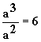

Sendo a a aresta de um cubo, temos que:
V= a3 | Volume do cubo |
S = 6a2 |
Superfície total do cubo |
Se a medida do volume e da área coincidirem (em valor numérico), então:
V = S | Þ | a3 = 6a2 | Þ |  | Þ |
a = 6 |
Portanto, para o volume de um cubo coincidir numericamente com a área desse mesmo cubo, sua aresta deverá medir 6 unidades. Esta é a situação da questão apresentada, por este motivo poderia ser possível responder ao item 02 apenas resolvendo o item 01.